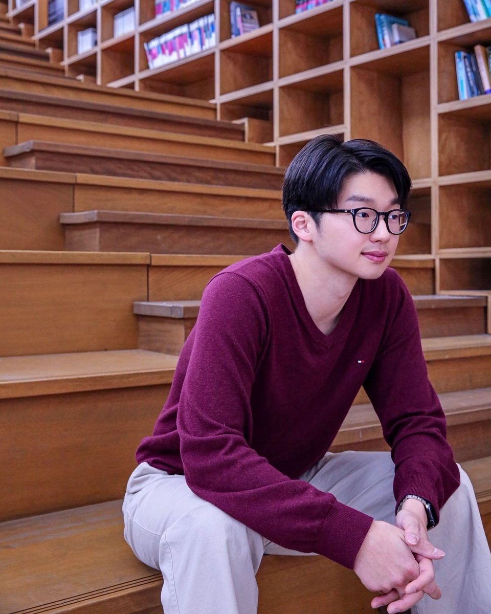
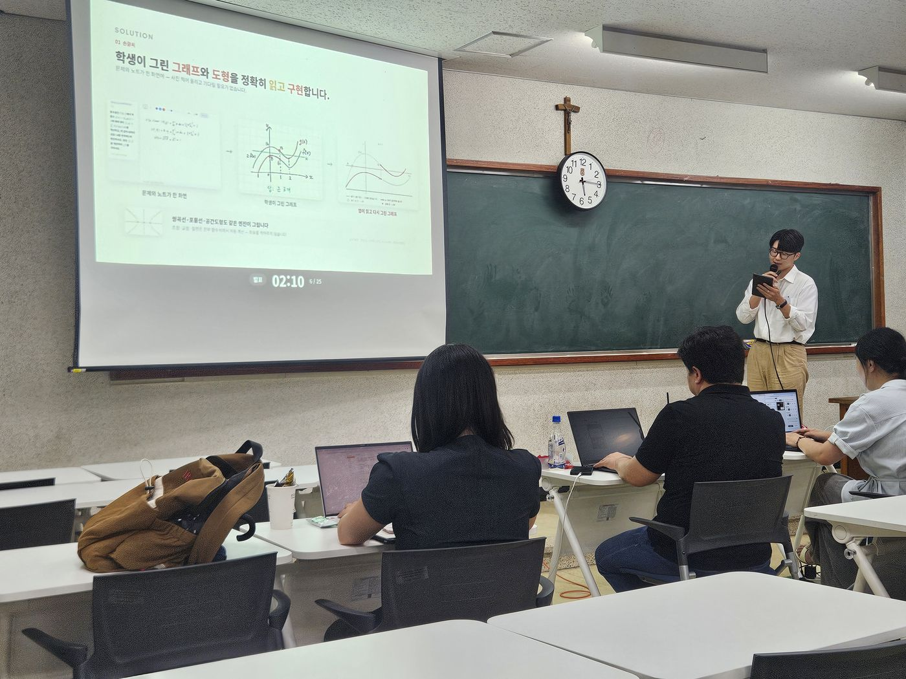
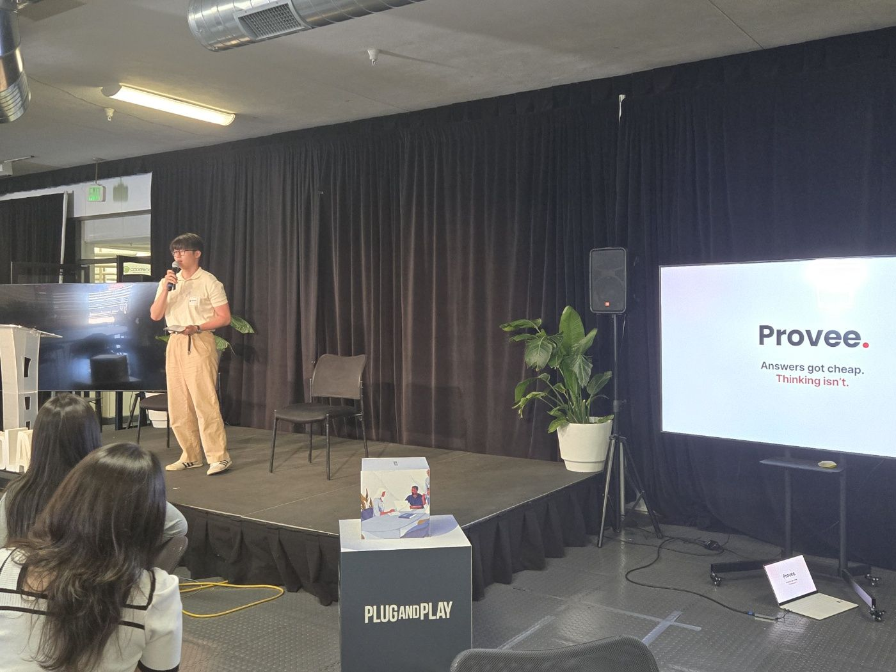

외우는 공부
단어 · 용어 · 정의
PROVE YOUR THINKING
Provee.미적분, 통계, 선형대수, 물리를
태블릿에 펜으로 푸는 동안
옆에서 읽고, 막힐 때만 말을 거는 선생님
손으로 푸는 과목을 AI로 공부하면
63%문제나 풀이를 찍고 캡처해 올리는 과정이 번거로울 때가 많았다
60%AI가 손글씨나 수식을 잘못 읽을 때가 많았다
63%AI가 스스로 생각하게 돕기보다 정답과 전체 풀이를 바로 보여 줄 때가 많았다
77%대화가 길어지거나 새 채팅을 열면 내 수준을 다시 설명해야 할 때가 많았다
63%: 정량 과목 공부에 생성형 AI를 써 본 대학생·졸업생 등 43명 중 27명, '자주' 이상(URP 온라인 설문 응답 105명 중 대학 응답, 2026년 7월, 지인·커뮤니티 모집). 영상은 연출60%: 정량 과목 공부에 생성형 AI를 써 본 대학생·졸업생 등 43명 중 26명, '자주' 이상(URP, 2026년 7월). 24 + 1: 2026년 9월 12일 GPT-5.6 Sol, 1회 실측, 실제 대화 캡처 일부63%: 정량 과목 공부에 생성형 AI를 써 본 대학생·졸업생 등 43명 중 27명, '자주' 이상(URP, 2026년 7월). 화면은 재구성77%: 정량 과목 공부에 생성형 AI를 써 본 대학생·졸업생 등 43명 중 33명, '자주' 이상(URP, 2026년 7월). 화면은 재구성
단어 · 용어 · 정의
미적분 · 통계 · 선형대수 · 물리 문제 풀이
오른쪽은 대표가 2024학년도 수능 14번을 18분 동안 푼 실제 필기를 빠르게 재생한 것입니다. 점선은 지운 획, 왼쪽 카드는 예시입니다.
노트도, AI도, 강의자료도 한 화면에서.
사진 한 장 대신, 획마다 쓴 자리와 시각을 받으니까요.
식에서 바로 긋는 선, 교점과 넓이까지 단계마다.
펜이 멈추면 먼저 묻고, 정답 대신 놓친 조건을 짚어요.
과목과 단원별로 모인 풀이, 누르면 쓴 순서 그대로.
| Provee. | 범용 AI 채팅 | 사진 풀이 앱 | |
|---|---|---|---|
| 문제를 넣는 법 | Provee노트에 그대로 씀 | 범용 AI 채팅사진이나 파일을 올리고, 원하는 것을 글로 설명 | 사진 풀이 앱문제를 카메라로 찍음 |
| 읽는 것 | Provee쓴 획과 순서, 지운 식까지 | 범용 AI 채팅올린 사진 한 장 | 사진 풀이 앱문제 사진 |
| 그래프 | Provee식에서 바로 선으로 그림 | 범용 AI 채팅그림을 만들거나 코드를 돌리는 동안 기다리기도 함 | 사진 풀이 앱앱마다 다름 |
| 막혔을 때 | Provee내가 쓴 풀이를 보고 놓친 조건을 먼저 묻고, 힌트는 한 단계씩 | 범용 AI 채팅기본은 정답과 전체 풀이부터. 학습 모드에선 되묻기도 하지만, 쓰는 과정은 보지 못함 | 사진 풀이 앱정답과 단계별 풀이 |
| 복습 | ProveeProvee Note에 과목별로 모여, 폰으로도 언제든 다시 봄 | 범용 AI 채팅채팅마다 흩어지기 쉬움 | 사진 풀이 앱찍은 문제 목록 |
2026년 9월 기준 공개 기능과 대표의 실제 사용 기록으로 정리했습니다. 서비스와 설정에 따라 다를 수 있습니다.
대학생은 시험 기간에 주 단위로, 중고등은 보호자가 월 단위로 결제합니다.
한 학교에서 먼저 제대로 검증하고, 그다음에 넓힙니다.
회사 이야기
AI가 답을 빨리 줄수록,
학생이 생각할 틈은 줄었습니다.고등학생 약 1,000명 현장 실험에서, 일반 ChatGPT처럼 쓰는 AI로 연습한 학생은 AI 없이 본 시험에서 AI를 쓰지 않은 학생보다 점수가 17% 낮았습니다. 답 대신 힌트를 주도록 만든 AI에서는 이 손해가 크게 줄었습니다. Bastani 외, PNAS, 2025
사진 한 장이면 답이 나오면서,
공부는 받아 적는 일이 되어 갔습니다.
Provee는 이 흐름을 거꾸로 갑니다.
2026년 1학기, 서강대 경제학과 3학년. 계량경제, 미적분, 수리통계, 선형대수를 한 학기에 들었습니다. 통학 3시간을 줄이려 고시원에 살며 새벽까지 공부해도, 매일 AI와 씨름하느라 순공부 시간이 모자랐습니다.
풀이를 찍어 올리고, 잘못 읽은 식을 다시 설명하고, 흩어진 채팅을 뒤지다 보면 하루가 갔습니다. 다음 날 진도는 또 밀렸습니다.
2026년 6월 13일, 의지는 있지만 혼자서는 어려운 학생을 위한 도구를 직접 만들기로 했습니다.

6월에 만들기 시작해, 10월 서강대 출시를 앞두고 있습니다.


이번 달,
서강대에서 먼저 엽니다
설문: URP 자체 온라인 설문, 2026년 7월, 응답 105명(중고생 42·대학생 63). 사용 의향은 5점 중 4~5점, 현재 공부 중인 응답자 85명 기준.
답은 AI가 알아도,
실력은 직접 풀어 본 사람에게 쌓입니다.
10월, 서강대에서 먼저 엽니다. 이메일을 남겨 주시면 저장해 두었다가,
여는 날 Matcha 요금제(주 6,500원) 2주 무료 혜택을 메일로 보내 드립니다.